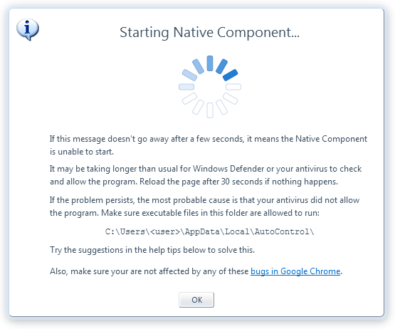
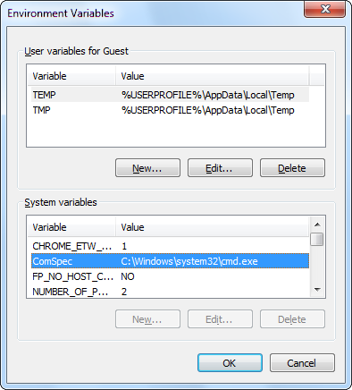
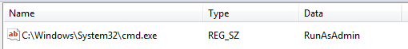
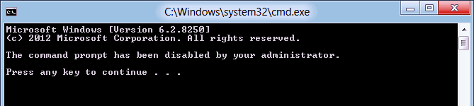
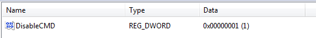

Issues in Chromium-based browsers

At present time, Google Chrome and all Chromium-based browsers contain a number of bugs that, when manifested, result in
a complete inability of the browser to start the Native Component.
If you are stuck at the "Starting Native Component" message box, you may be affected by one of these bugs. See below for how to solve each one.
Issue #335558 bug report
The browser will fail to start the Native Component if the installation path contains an ampersand character (&)
or an at sign (@) plus spaces.
The install path looks like this:
C:\Users\<username>\AppData\Local\AutoControl\
Make sure that:
» There are no ampersands in it
» If there's an @ sign, there must be no spaces (i.e. an @ sign without spaces is fine)
For example, the following path will trigger this bug:
C:\Users\john smith@example.com\AppData\Local\AutoControl\
The only way to solve this issue is by changing your user name.
Issue #387233 bug report
The browser will fail to start the Native Component if the ComSpec environment variable
is not set or has been changed from its default value of %SystemRoot%\system32\cmd.exe,
where %SystemRoot% is usually C:\Windows.
In order to fix this, go to Control Panel > User Accounts and Family Safety > User Accounts > Change my environment variables

Make sure the ComSpec variable exists and is set to its default value either as a User variable or a System variable (or both). User variables override system variables.
Then, you must log out of your account and log in again for the change to take effect. Reboot is not needed.
Issue #387228 bug report
The browser will fail to start the Native Component if cmd.exe is configured to run always as Administrator from non-admin accounts.
To check if this is your case, open a command prompt by pressing Win+R and then type cmd in the dialog box that shows up and press Enter.
If you are asked for the Administrator password before the command window appears, then you are affected by this bug.
To fix the problem, open the Windows Registry
and browse to the following key:
HKEY_CURRENT_USER\Software\Microsoft\Windows NT\CurrentVersion\AppCompatFlags\Layers
On the right pane, look for an entry like this:

Change the value RunAsAdmin to RunAsInvoker. If the entry is missing or the key path doesn't exist at all,
then you must create it (instructions here
or here).
This fix will only affect the user account from which you are making the change.
Unreported issue
The browser will fail to start the Native Component if the command prompt's script processing has been disabled.
To check if this is your case, open a command prompt by pressing Win+R and then type cmd in the dialog box that shows up and press Enter.
If the command window shows a message similar to this:

then you are affected by this bug.
To fix the problem, open the Windows Registry
and browse to the following key:
HKEY_CURRENT_USER\SOFTWARE\Policies\Microsoft\Windows\System
On the right pane, look for the DisableCMD entry:

Change its value to 0 or 2 (any of the two is fine).
If the entry is missing or the key path doesn't exist at all,
then you must create it (instructions here
or here).
This fix will only affect the user account from which you are making the change.